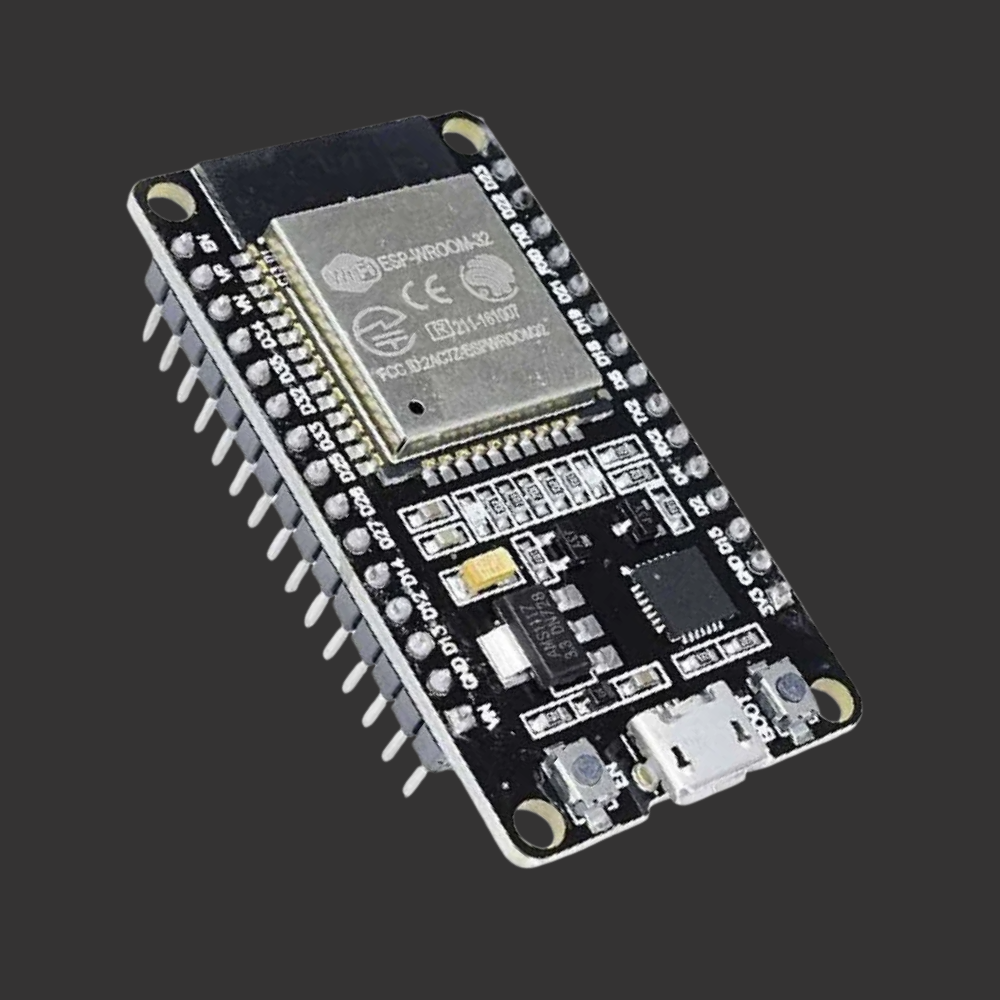
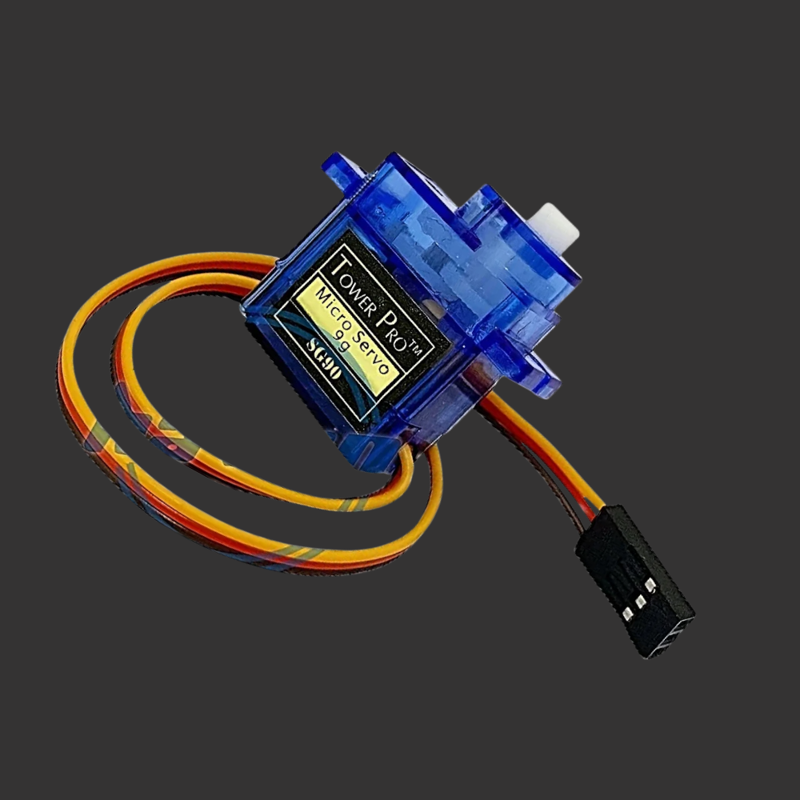
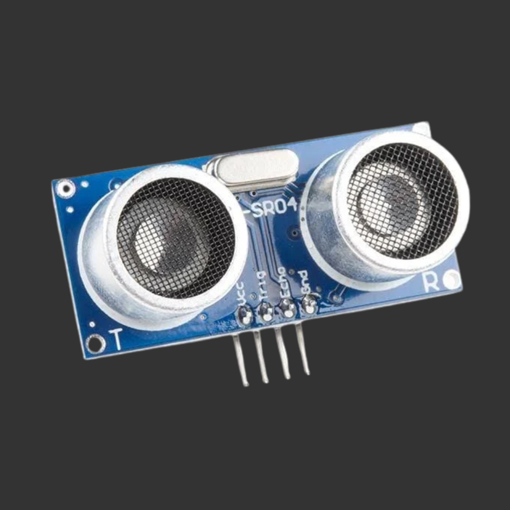
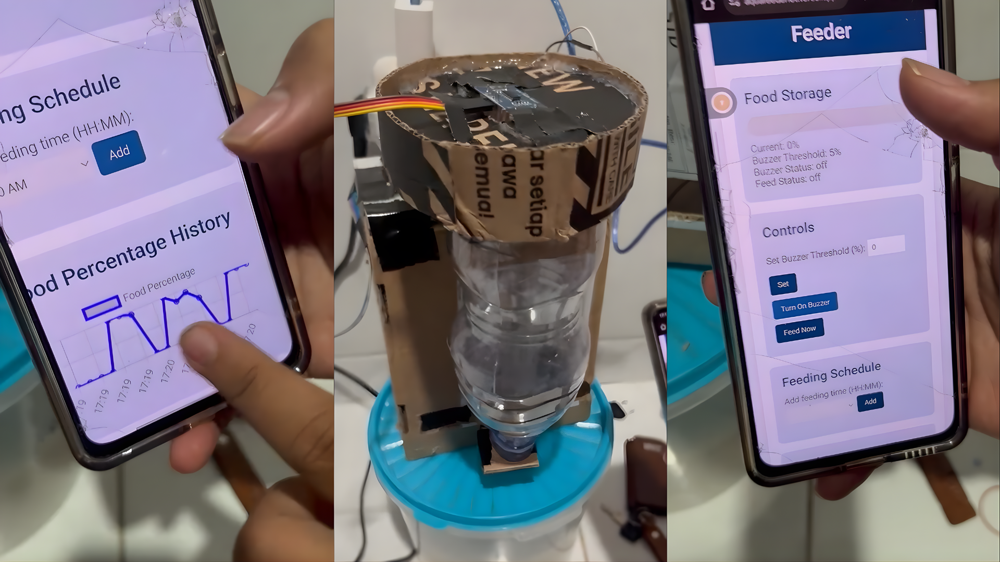

The Mission
Manual fish feeding is often inconsistent, leading to unpredictable water quality and poor fish health due to overfeeding or missed schedules. The AquaFeeder IoT project was born to bridge this gap. My objective was to architect and develop an end-to-end e-feeder ecosystem. This system needed to provide precise, automated feeding schedules while offering real-time distance monitoring and remote schedule management through a seamless web interface.
System Architecture & Communication
To ensure robustness and flexibility, I avoided instant IoT platforms and built the backend from scratch. The system architecture is defined by clear HTTP communication protocols between the C++ based ESP32 client and a dynamic Python Flask server:
- ESP32 as Client: The hardware utilizes the
HTTPClientlibrary to act as a client. It reads data from the ultrasonic sensor and sends a periodic POST request to the Flask server with the food level data in a JSON payload. - Python Flask as Server: The server acts as the centralized hub. It exposes REST endpoints (
/api/data,/api/schedule) to receive sensor data and serve the current feeding schedules back to the ESP32.
The Technical Edge: Multithreaded Backend
This project required rigorous software engineering logic beyond standard IoT scripting. A primary challenge was managing the feeding scheduler without blocking the main web server. I solved this by leveraging Python’s threading library.
I engineered a background thread that runs a scheduler loop in parallel with the Flask app. This thread continuously polls the schedules.json file. When a scheduled time matches, it executes the feeding command. This architecture ensures that web requests for the dashboard remain lightning-fast and uninterrupted while the automation runs reliably in the background.
Building the Dynamic Web Dashboard
The frontend was designed for an intuitive user experience, served using Jinja2 templating. Instead of generic charts, I created a custom CSS-based water/food level gauge that updates dynamically. To maintain the "application-like" feel, I utilized Vanilla JavaScript (Fetch API) to perform asynchronous data fetching (AJAX). This ensures that the food level, next feeding time, and status update in real-time without requiring a single page reload.
Hardware Component Breakdown
An inside look at the core hardware that drives the AquaFeeder automation and monitoring logic.

ESP32: The Main Brain
Acts as the centralized microcontroller hub. It handles Wi-Fi connectivity, performs data acquisition from the sensor, executes C++ logic for HTTP communication, and generates PWM signals to control the servo mechanism.

Servo SG90: The Actuator
Controls the precise physical movement of the feeding door. It receives positional commands from the ESP32, rotating to the exact angle required to release the specified amount of fish food before automatically closing.

HC-SR04: The Eyes
Utilizes ultrasonic sound waves to measure the distance to the food surface within the container. This raw distance data is sent to the ESP32 and backend to calculate the container’s fullness percentage in real-time.
Physical Integration & Prototypes
Translating simulated designs into a physical product requires meticulous prototyping. While high-fidelity documentation was lost during the intensive development and testing phases, these authentic artifacts—a screenshot from a video review and a photo of a phone showing the dynamic dashboard—prove the successful symbiosis of the full-stack system.

From Video Review to Mobile Control: Proving hardware-software symbiosis despite lost high-res documentation.
Conclusion
AquaFeeder IoT is more than just an automatic feeder; it is a full-stack IoT ecosystem that demonstrates rigorous integration across bare-metal logic (C++), multithreaded backend architecture (Python), and responsive web development (JavaScript). Building this solidified my understanding of concurrent programming and RESTful communication in a hardware context.